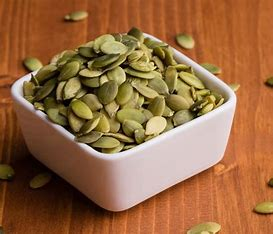

A pumpkin seed, also known as a pepita (from the Mexican Spanish: pepita de calabaza, 'little seed of squash'), is the edible seed of a pumpkin or certain other cultivars of squash. The seeds are typically flat and oval with one axis of symmetry, have a white outer husk, and are light green after the husk is removed. Some pumpkin cultivars are huskless and are grown only for their edible seed. The seeds are nutrient- and calorie-rich, with an especially high content of fat (particularly linoleic acid and oleic acid), protein, dietary fiber, and numerous micronutrients. Pumpkin seed can refer either to the hulled kernel or unhulled whole seed and most commonly refers to the roasted end product used as a snack.
Pumpkin seeds are a common ingredient in Mexican cuisine and are also roasted and served as a snack. They are a commercially produced and distributed packaged snack, like sunflower seeds, available year-round. Pepitas are known in the US by their Spanish name (usually shortened) and are typically salted and sometimes spiced after roasting. The earliest known evidence of the domestication of Cucurbita dates back 8,000–10,000 years ago, predating the domestication of other crops such as maize and common beans in the region by about 4,000 years. Changes in fruit shape and color indicate intentional breeding of C. pepo occurred no later than 8,000 years ago. The process to develop the agricultural knowledge of crop domestication took place over 5,000–6,500 years in Mesoamerica. Squash was domesticated first, with maize second, followed by beans, all becoming part of the Three Sisters agricultural system. Hulled pumpkin seeds As an ingredient in mole dishes, they are known in Mexican Spanish as pipián. A salsa made of pumpkin seeds and known as sikil pak is a traditional dish of the Yucatán. A Mexican snack using pepitas in an artisan fashion[clarification needed] is referred to as pepitoría. Lightly roasted, salted, unhulled pumpkin seeds are popular in Greece with the descriptive name πασατέμπο, pasatémbo, from Italian: passatempo, lit. 'pastime'. The pressed oil of the roasted seeds of the Styrian oil pumpkin (Cucurbita pepo subsp. pepo var. 'styriaca') is also used in Central and Eastern Europe cuisine. Pumpkin seeds can also be made into a nut butter. Pumpkin seeds can also be steeped in neutral alcohol, which is then distilled to produce an eau de vie.
Dried, roasted pumpkin seeds are 2% water, 49% fat, 15% carbohydrates, and 30% protein (table). In a 100-gram reference serving, the seeds are energy-dense (2,401 kJ or 574 kcal), and a rich source (20% of the Daily Value, DV, or higher) of protein, dietary fiber, niacin, iron, zinc, manganese, magnesium, and phosphorus (table). The seeds are a moderate source (10–19% DV) of riboflavin, folate, pantothenic acid, sodium, and potassium (table). Major fatty acids in pumpkin seeds are linoleic acid and oleic acid, with palmitic acid and stearic acid in lesser amounts (source in table).